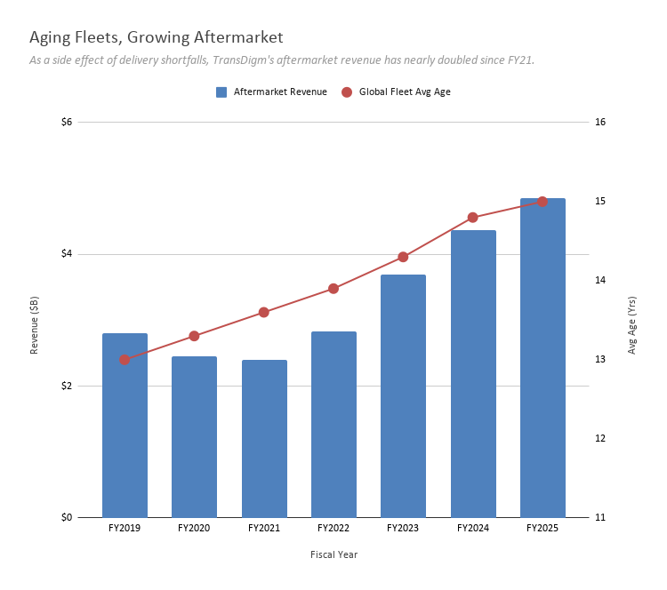

Too Close to the Sun? TransDigm’s Takeover of the Aerospace Parts Market
TransDigm Group began in 1993 as a holding corporation, created for the purpose of acquiring and consolidating four niche aerospace companies from IMO Industries. Initially, they manufactured a small number of aircraft components, but its founders - Nicholas Howley and Douglas Peacock - had a larger vision for the company that involved further acquisitions to expand their production line. Since its inception, they have acquired 95 business and various product lines (with many of the acquisitions occurring post-IPO in 2006); they most recently acquired Prince & Izant, a metal solutions company, in July 2026.
Their product range is quite vast. They report in two main aerospace segments: Power & Control (batteries, sensors, switches, cargo loading systems, etc.) and Airframe (latching and locking devices, cockpit displays, audio and antenna systems, lavatory components, parachutes, and so on). The common denominator among this seemingly random assortment of objects is that these are small, deeply specialized, critical parts found all across an aircraft. By cornering subsections of the aviation market, they have been able to implement strong cost controls and leverage their pricing power to become - in many cases - the only manufacturer that currently makes the part.
The company estimates that roughly 90% of net sales come from proprietary products, and about 55% come from the aftermarket. They also estimate a product life cycle in excess of 50 years, since aircraft platforms are typically produced for 20-30 years and then remain in service for another 25-30. This is to say that even after an aircraft is put into service, airlines and airline maintenance companies will still be in touch with TransDigm in some way, providing the company with a continued revenue stream for at least a couple more decades.
TransDigm describes its business strategy as having two pillars: an operating strategy built around three core ‘value drivers’ (price, productivity, and profitability) and a selective acquisition strategy. On the acquisition side, targets must fit a very specific profile: they must produce proprietary, often sole-source, commercial aerospace products with a significant portion of revenue derived from the aftermarket. The typical target is a small, well-engineered business that has strong IP and certification on long-lived aircraft platforms but isn’t being run to maximize margins. TransDigm will then acquire it and apply its playbook (the aforementioned value drivers); the business will converge toward the company’s overall margin profile over time.

The chart above shows the FY2016-FY2025 margin trajectory with the two dips called out: FY2016 margin was 47.1%, and it was steadily climbing toward ~49% before the Esterline acquisition pulled it back to 46.3% in FY2019; COVID cratered it further to roughly 43% in FY2020. And yet, TransDigm recovered strong. Margins didn’t just return to pre-crisis levels, but exceeded them to reach 53.9% [data label not shown] in FY2025. It is clear that their ‘3 Ps’ playbook - however simplistic it may sound - is working.
In 2019, two Department of Defense audits found that TransDigm earned excess profits on 151 of 153 spare parts reviewed, totaling roughly $37 million in overcharges across 2017-2019, with profit margins on individual contracts ranging from 2.8% to 3,850.6%. Congressional hearings featured bipartisan outrage and demands for refunds; the Fair Pricing with Cost Transparency Act was drafted, aimed at closing the loopholes that let sole-source suppliers like TransDigm avoid disclosing cost data on contracts below the TINA threshold.
Meanwhile, TransDigm has been working on publishing its own counter-narrative. A third-party analysis of FY2019-2023 data found that direct DoD sales account for approximately 6.5% of the company’s revenue, and the controversial contracts represent just ~$70 million annually, or about 1.3% of total sales. The majority of TransDigm’s direct DoD sales are actually negotiated based on cost analysis, competition among multiple bidders, or the DoD’s own terms.
The pricing controversy is, then, a financially trivial slice of business. The company’s real margin is made in the commercial aftermarket, where airlines will voluntarily pay a premium for availability and certification given TransDigm’s visibility in the space.
The aftermarket accounted for about 55% of TransDigm’s sales but roughly three-quarters of EBITDA in 2022. This is a profit concentration that has been shifting over time, especially as airlines held onto older planes for longer post-COVID and Boeing/Airbus production delays kept aging aircraft in service. Every year a new plane delivery gets pushed back, the installed base of older aircraft grows, and TransDigm’s highest-margin business receives a longer runway - and at current delivery rates, the backlog of 17,000 unfilled plane orders would take 14 years to fulfill.

The chart above shows TransDigm’s estimated aftermarket revenue (total revenue × aftermarket share from each year’s 10-K). The red line shows global fleet average age, which IATA confirmed hit a record 14.8 years in 2024, up significantly from the 1990-2024 average of 13.6 years. By 2025 it reached 15 years, compared to 13 years pre-COVID. The two series move together almost in lockstep from FY21 onward; aftermarket revenue roughly doubled from $2.4B to $4.9B in four years, while the fleet aged by about 1.5 years.
While TransDigm does seem to have a winning strategy, it isn’t infallible. The most significant challenge facing the company has to do with the acquisition model itself. In July 2026, the U.S. Department of Justice blocked TransDigm’s $960M purchase of Stellant Systems - a specialized radio and microwave frequency hardware manufacturer - due to antitrust concerns. The DOJ stated that TransDigm and Stellant compete to supply and repair components used in radar systems for the Navy’s Aegis Combat System and the Air Force’s F-16s, and that the acquisition would have left the Department of Defense with only one source for its critical products.
TransDigm’s approach is a double-edged sword: while monopolizing niche markets has led to great success, it also creates dependencies in the overall supply chain. When it comes to small-but-critical parts such as the ones TransDigm produces, any disruption in manufacturing can ground fleets or delay essential repairs. If regulators start systematically scrutinizing whether each new acquisition creates an unfair reliance on TDG in defense supply chains, their playbook could be threatened. At the moment, this isn’t a huge issue - TransDigm completed roughly $3B in deals in FY2026 alone and management has stated that they retain over $10B in M&A capacity - but moments like the blocked acquisition are reminders that the M&A engine can, in fact, be slowed. Whether or not the company’s organic growth can sustain the company’s trajectory if this happens is an open question, and this uncertain future is what makes TransDigm one of the most interesting companies in aerospace right now.